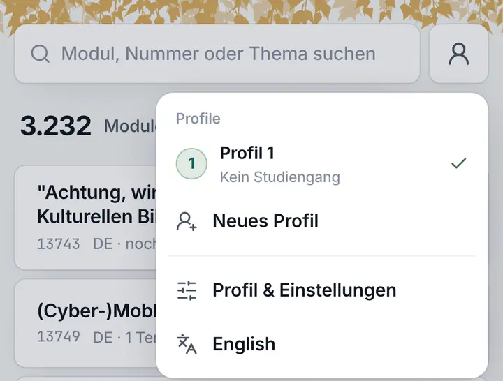
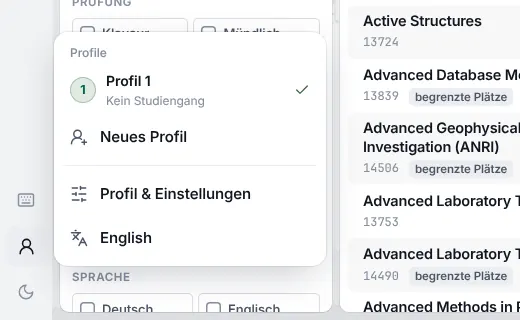

Modul, Nummer oder Thema suchen
Konzept · Profil und sein Menü · 08.11.2026
Das Profil sagt, wer du in Betula bist und auf welchen Geräten. Alles andere steht dort, wo man es braucht.
Heute ist die Profilseite eine Sammelstelle: Profile, Sicherung, fünf Links zu Seiten, die die Navigation schon hat, Betula Sync, Einstellungen des Browsers und das Impressum, in dieser Reihenfolge. Der Vorschlag ordnet nach dem, was man tut und wie oft: Was für den ganzen Browser gilt, wandert ins Menü am Profil-Knopf, einen Tipp entfernt auf jeder Seite. Die Seite selbst zeigt das Profil mit ein paar Zahlen, dann Betula Sync als ihre Hauptsache, dann das Seltene, das Folgenschwere zuletzt.
Fünf Sätze
- Was für den Browser gilt, steht im Menü, nicht auf der Profilseite. Darstellung und Sprache sind am Profil-Knopf zwei Tipps entfernt, auf dem Handy wie am Rechner.
- Gerät verbinden ist die Hauptsache. Es ist im Menü und oben auf der Profilseite, und der QR-Code steht immer auf dem Rechner: Die Kamera ist die des Handys, egal auf welchem Gerät das Profil schon liegt.
- Zahlen statt Links. Was die Navigation erreicht, verlinkt die Profilseite nicht noch einmal. Sie sagt, was im Profil steckt.
- Was eine Auswahl trifft, steht über dem, was sie ändert. Die Profile stehen im Menü oben, auf der Seite oben (am Rechner links); was zum gewählten Profil gehört, darunter.
- Das Seltene zuletzt, das Folgenschwere abgesetzt. Sichern, Leeren, Löschen stehen am Ende, Leeren und Löschen mit Rückfrage und „Rückgängig“ wie heute.
Nur Konzept, nichts davon ist gebaut. Schon gemacht, weil du es direkt gesagt hast: Der Link fürs nächste Gerät heißt jetzt /sync#… statt /verbinden#…, die Rechtsseiten /imprint und /privacy; die alten Adressen leiten weiter (Adressen).
Heute
Eine Seite mit sieben Teilen, und der wichtigste steht in der Mitte
So sieht die Profilseite auf canary aus (Folia 1.76.0), mit einem leeren Profil. Auf dem Handy ist sie 2,5 Bildschirme lang; die roten Linien sagen, wie weit man scrollen muss.
 Profil 1: 0,5 Bildschirme
Betula Sync: 1,4
Darstellung: 1,8
Impressum: 2,3
Profil 1: 0,5 Bildschirme
Betula Sync: 1,4
Darstellung: 1,8
Impressum: 2,3



- Betula Sync steht in der MitteDas Wichtigste, wenn man mit dem Handy am Rechner sitzt, kommt nach der Profilliste, der Sicherung, dem Studiengang und fünf Links. Am Handy nach 1,4 Bildschirmen.
- Das Handy kann das Profil nicht auf den Rechner bringenLiegt das Profil auf dem Handy, zeigt das Handy den QR-Code, und der Rechner hat keine Kamera. Es bleibt: den Link kopieren und sich selbst schicken, oder den Wiederherstellungscode abtippen, 52 Zeichen.
- Fünf Links, die die Navigation schon hat„In diesem Profil“ führt zu Merkliste, Sammlungen, Stundenplan, Mein Studium und den Plänen, „Mein Studiengang“ noch einmal zu Mein Studium und zu allen Studiengängen.
- Einstellungen, die keine des Profils sindDarstellung, Sprache und Einzelne Tasten „gelten in diesem Browser für alle Profile“, sagt die Seite selbst. Am Handy gibt es Hell und Dunkel nur hier, nach 1,8 Bildschirmen.
- Auf dem Handy erst verwalten, dann ansehenDie Seitenleiste steht am Handy vorn: Profilliste, „Neues Profil“, „Als Datei sichern“, „Aus Datei laden“ und ein Hinweis, bevor das Profil selbst kommt.
- Das iPhone bringt das Profil in den falschen SpeicherWer Betula auf dem Home-Bildschirm hat, scannt den Code mit der Kamera, und iOS öffnet den Link in Safari. Safari und die App teilen keinen Speicher: Das Profil landet in Safari, nicht in der App.
Was bleibt, wie es ist: das Impressum und der Datenschutz müssen von jeder Seite erreichbar bleiben (§ 5 DDG); das tun sie heute über den Profil-Knopf und das Ende der Profilseite. Ohne JavaScript führt der Knopf zur Ersatzseite mit der anderen Sprache und den Rechtsseiten; daran ändert das Konzept nichts.
Was man tut, und wie oft
Fast alles am Profil ist selten. Das Häufigste ist Wechseln, das Wichtigste Verbinden.
Geschätzt nach dem, wofür Betula da ist; Zahlen dazu gibt es nicht, weil Betula nichts von dem zählt, was in einem Browser geschieht. „Tipps“ sind Tipps und Klicks bis zum Ziel, Scrollen extra.
| Aktion | Wer | Wie oft | Heute | Neu |
|---|---|---|---|---|
| Profil wechseln | Wer mehrere Profile hat (Zweitstudium, für jemand anderen planen) | wöchentlich | 2 MenüRechner: Darüberfahren | 2 Menü, wie heute |
| Ein weiteres Gerät verbinden | Jeder, der Betula auf Handy und Rechner nutzt | einmal je Gerät, aber der Moment | 2–4 + 1,4 BildschirmeProfil, scrollen, Aktivieren, Aktivieren | 2 Menü → Gerät verbindenbeim ersten Mal 3: Sync einschalten |
| Profil vom Handy auf den Rechner holen | Wer auf dem Handy angefangen hat | einmal je Gerät | Link sich selbst schickenoder 52 Zeichen abtippen | 2 + 3 Rechner zeigt, Handy scannt |
| Sehen, ob Sync läuft | Wer Sync nutzt | ab und zu | 1 + scrollen | 1 Menü; eine Störung als Punkt am Knopf (0) |
| Hell, Dunkel, System | Alle | einmal, selten wieder | 1 Rechner (Leiste)Handy: 2 + 1,8 Bildschirme | 2 Menü, auf beidenRechner: der Knopf in der Leiste bleibt (Frage 2) |
| Sprache | Alle; meist stimmt die des Browsers | einmal | 2 Menü | 2 Menü, als Auswahl |
| Neues Profil | Wenige | selten | 2 Menü | 2 Menü, wie heute |
| Umbenennen | Wer mehrere Profile hat | einmal | 2 Seite, Kopf | 2 Seite, am Namen |
| Wiederherstellungscode ansehen | Wer Sync nutzt | einmal, ihn aufzuschreiben | 2 + scrollen | 2 Seite, im Sync-Teil oben |
| Als Datei sichern, aus Datei laden | Wer kein Sync will, oder für ein Archiv | selten | 2 Seite, Seitenleiste | 2 Seite: Sichern beim Profil, Laden bei „Profil hinzufügen“ |
| Profil leeren, löschen | Wenige | sehr selten | 2–3 Seite, verstreut | 3 Seite, am Ende, mit Rückfrage |
| Impressum, Datenschutz | Kaum jemand, aber Pflicht | fast nie | 1–2 + 2,3 Bildschirme | 2 Menü, Fuß; dazu am Ende der Seite |
| Einzelne Tasten an, aus | Wer die Tastatur nutzt | einmal | Seite, Tastenübersicht, Befehle | Tastenübersicht und Befehle; sie gehören zur Tastatur |
Was daraus folgt: Kein Teil der Seite wird oft gebraucht; der häufigste Weg, das Wechseln, geht übers Menü und soll dort bleiben. Darum darf die Seite ruhig sein. Das Verbinden ist selten, aber es ist der Moment, in dem Betula zeigt, ob es auf dem Handy und am Rechner dasselbe ist: Dafür braucht es den kürzesten Weg und die meiste Sorgfalt.
Wie es andere machen
Drei Muster, die sich durchgesetzt haben
Das Menü am Avatar
Google, YouTube, GitHub: Ein Klick auf das Bild oben öffnet ein Menü mit dem Konto oben, den anderen Konten zum Wechseln und „Konto verwalten“. YouTube führt dort auch Darstellung und Sprache; Googles Menü hat im Fuß „Datenschutz · Nutzungsbedingungen“.
Für Betula: Das Menü am Profil-Knopf ist der Schnellzugriff. Ein Klick öffnet es auch am Rechner, und die Seite ist einer seiner Einträge.
Verknüpfte Geräte
WhatsApp und Signal: Das neue Gerät zeigt einen QR-Code, das Handy scannt ihn in der App („Verknüpfte Geräte → Gerät hinzufügen“). Eine Liste zeigt jedes Gerät mit Name und wann es zuletzt da war; bei einem unbekannten Gerät fragt WhatsApp nach.
Für Betula: Der Code steht auf dem Rechner, gescannt wird mit dem Handy, in beide Richtungen. Später eine Liste der Geräte des Profils.
Die Gefahrenzone
GitHub und andere stellen, was sich nicht leicht zurücknehmen lässt, ans Ende der Einstellungen, rot umrandet, jedes mit eigener Rückfrage. Was man oft braucht, steht oben, und nichts Gefährliches daneben.
Für Betula: Leeren und Löschen ziehen vom Kopf und aus „In diesem Profil“ in einen Teil am Ende. Umbenennen bleibt am Namen.
Zwei Fakten der Plattformen, die das Verbinden bestimmen
- Eine Web-App auf dem iPhone-Home-Bildschirm hat ihren eigenen Speicher, getrennt von Safari, mit Absicht (WebKit; seit iOS 26 öffnet jede hinzugefügte Seite als Web-App). Einen gescannten Link öffnet iOS in Safari, nie in der Web-App. Wer Betula so nutzt, braucht den Scanner in Betula selbst, sonst landet das Profil in Safari. Auf Android öffnet ein installiertes Betula seine Links selbst.
- QR-Codes im Browser lesen kann von sich aus nur Chrome auf Android (
BarcodeDetector); Safari hat es nur hinter einem Schalter, Firefox gar nicht (Stand Oktober 2026). Für alle anderen braucht es einen Decoder in WebAssembly; für Betula passt die Rust-Craterqrrim Worker, geladen erst, wenn der Scanner aufgeht. Und der Server verbietet die Kamera heute (Permissions-Policy: camera=()); dafür würde darauscamera=(self).
Die Profilseite
Wer, was drin ist, auf welchen Geräten, und am Ende das Seltene
Von oben nach unten: die Profile (am Handy als eine Reihe, am Rechner links), der Kopf des Profils mit seinem Studiengang als Text und ein paar Zahlen, Betula Sync, Sichern, die Gefahrenzone und eine Fußzeile. Kein Link führt zu einem Tab.
L
Modul, Nummer oder Thema suchen
L
Lena
1Informatik B.Sc. · PO 2008 · 3. Fachsemester · Cottbus
Profil seit 14.10.2026
2
46gemerkt
18geplant, in 2 Semestern
84 LPbestanden, 12 Module
3 · 5Sammlungen · Notizen
2gespeicherte Pläne
Betula Sync
Synchron3Dieser Rechner · Firefox · Windowsjetzt
Pixel 7 · Chrome · Android online
Gerät verbindenWiederherstellungscode
Dieses Gerät trennenSync beenden
Als Datei sichern
Datei speichernFür ein Archiv, oder ohne Sync auf ein anderes Gerät; „Aus Datei laden“ macht daraus ein neues Profil.
4
Gefahrenzone
Profil leeren
Merkliste, Pläne und Studium gehen, „Lena“ bleibtLeeren …
Merkliste, Pläne und Studium gehen, „Lena“ bleibtLeeren …
Profil löschen
„Lena“ verschwindet aus diesem Browser; andere Geräte behalten esLöschen …
„Lena“ verschwindet aus diesem Browser; andere Geräte behalten esLöschen …
ImpressumDatenschutzFolia 1.77.0Radix 0.10.0Daten vom 08.11.2026Quelle: BTU ↗
9:41●●● 5G
LLenaZZweitstudiumProfil
L
Lena
Informatik B.Sc. · PO 2008 · 3. FS · Cottbus
46gemerkt
18geplant, 2 Semester
84 LPbestanden
3 · 5Sammlungen · Notizen
Betula Sync
SynchronDieses Handy · Chromejetzt
Rechner · Firefox · Windowsvor 2 Std.
Gerät verbindenWiederherstellungscode
Dieses Gerät trennenSync beenden
Als Datei sichern
Gefahrenzone
Profil leeren · Profil löschen
- 1Der Kopf: der Name, mit dem Stift daneben zum Umbenennen an Ort und Stelle (heute ein Knopf „Umbenennen“). Darunter „Mein Studiengang“ als eine Zeile Text, ohne Link und ohne „Ändern“: geändert wird er in Mein Studium. Ohne Studiengang steht dort „Noch kein Studiengang“, grau.
- 2Zahlen statt Links: gemerkt, geplant (in wie vielen Semestern), bestanden mit den Leistungspunkten, Sammlungen und Notizen, gespeicherte Pläne. Keine Kachel ist ein Link. Ein leeres Profil zeigt statt der Zahlen einen Satz: „Noch leer: Was du merkst, planst und bestehst, zählt hier.“
- 3Betula Sync zuerst nach dem Kopf, mit „Gerät verbinden“ als dem einen betonten Knopf der Seite. Später die Liste der Geräte (unten); bis dahin steht dort, was heute steht: „Synchronisiert · 1 weiteres Gerät online“. Was zwei Geräte gleichzeitig geändert haben, steht weiter hier, mit dem Weg zur Stelle; das ist ein Link zu einer bestimmten Notiz, nicht zu einem Tab.
- 4Die Gefahrenzone hält Leeren und Löschen, beide mit der Frage und dem „Rückgängig“, die es heute gibt. Löschen bleibt beim einzigen Profil Leeren, wie heute. Die Fußzeile hält, was „Über diese Seite“ hielt, in einer Zeile.
Ein privates Profil, und ein leeres auf einem neuen Rechner
Betula Sync
Nur in diesem BrowserPlane am Rechner, schau am Handy nach: Mit Betula Sync ist „Lena“ auf allen deinen Geräten gleich, verschlüsselt mit einem Schlüssel, den nur sie haben.
Gerät verbindenWas der Server dann sieht
Betula Sync
Leeres ProfilHast du Betula schon auf dem Handy? Hol dein Profil hierher: Der Rechner zeigt einen Code, dein Handy scannt ihn.
Profil vom Handy holenWiederherstellungscode eingeben
Gerät verbinden
Der Rechner zeigt den Code, das Handy scannt, egal wo das Profil schon ist
Ein Dialog über der Seite, aus dem Menü oder von der Profilseite aus. Oben die Richtung (die Auswahl über dem, was sie ändert), darunter der Code. Vorgewählt ist der übliche Fall: hat dieser Browser ein Profil mit Inhalt, „Dieses Profil aufs Handy“; ist sein einziges Profil leer, „Profil vom Handy holen“.
Gerät verbinden
„Lena“ aufs HandyProfil vom Handy holen
Scanne den Code mit deinem Handy. Mit der Kamera, oder in Betula: Profil-Knopf → Gerät verbinden. Hast du Betula auf dem iPhone-Home-Bildschirm, nimm den Weg in Betula, sonst landet das Profil in Safari.
Gilt einmal und zehn Minuten: Wer ihn scannt, bekommt „Lena“.
Link kopierenTeilenNoch 9 Minuten
Pixel 7 ist verbunden. „Lena“ ist jetzt auf beiden Geräten.Fertig
Gerät verbinden
„Profil 1“ aufs HandyProfil vom Handy holen
Öffne Betula auf deinem Handy: Profil-Knopf → Gerät verbinden, und scanne diesen Code. (Die Kamera-App geht auch, wenn Betula auf dem Handy im Browser läuft.)
Dein Handy zeigt dann diese vier Ziffern: 7241
Wartet auf dein Handy · noch 9 Minuten
Kein Handy zur Hand? Wiederherstellungscode eingeben
9:41●●● 5G
Halte die Kamera auf den Code am Rechner
Wiederherstellungscode eingeben
Hier einen Code zeigen
Für ein Tablet oder ein zweites Handy
9:41●●● 5G
Ein Rechner möchte ein Profil
Welches?
LLenaInformatik B.Sc. · synchron
ZZweitstudiumnur auf diesem Handy
Zeigt der Rechner diese Ziffern?
7241Nur, wenn er vor dir steht: Er bekommt „Lena“ und bleibt verbunden, bis du ihn trennst.
- AWas es heute gibt, bleibt: der Code und Link fürs nächste Gerät (
/sync#…), zehn Minuten, einmal, mit dem Schlüssel hinter dem#, den kein Browser an einen Server schickt. - BDer umgekehrte Weg braucht fast nichts Neues: Der Rechner würfelt die Kennung und den Schlüssel des Pakets selbst und zeigt sie als Code (
/sync#r…); das Handy legt das Paket, das es heute auch legt, unter dieser Kennung ab (POST /sync/v1/pair), und der Rechner holt es (GET /sync/v1/pair). Neu bei Phloem nur, dass das Holen bis zu 25 Sekunden auf das Paket wartet, damit der Rechner nicht im Sekundentakt fragen muss; alte Builds merken davon nichts (MINOR). - !Warum die Ziffern: Ein Code zum Empfangen ist eine Bitte, das eigene Profil herzugeben. Hängt jemand so einen Code aus („Scan für den Stundenplan!“), bekäme er das Profil von jedem, der bestätigt. Die vier Ziffern kommen aus dem Schlüssel des Codes und stehen auf beiden Bildschirmen; wer sie vergleicht, weiß, dass der Rechner vor ihm der ist, der fragt. So macht es Bluetooth beim Koppeln.
- Die Kamera bleibt im Gerät: Betula liest nur Bilder des Videos, bis ein Code darin ist, und schickt keines weg. Die Datenschutzerklärung bekommt dazu einen Satz, der Server erlaubt die Kamera der eigenen Seite (
camera=(self)). Ohne Kamera oder ohne Erlaubnis bleiben „Wiederherstellungscode eingeben“ und „Hier einen Code zeigen“.
Später: die Geräte des Profils
Phloem kennt jedes Gerät eines Profils nur als Platz 1 bis 16 und sagt, welche gerade online sind. Einen Namen kennt es nicht und soll es nicht kennen. Darum schreibt jedes Gerät einen eigenen, verschlüsselten Eintrag ins Profil: „Pixel 7 · Chrome · Android“ (der Name aus dem Browser, umbenennbar) und wann es zuletzt da war. Die anderen Geräte lesen ihn wie jede Änderung; für den Server ist er eine Änderung wie jede andere. Ein Build, der den Eintrag nicht kennt, behält ihn, wie er ist (docs/folia/sync.md §1).
Was dabei wartet: ein anderes Gerät aus der Liste entfernen. Es hat den Schlüssel; es wirklich auszusperren hieße, den übrigen Geräten einen neuen Schlüssel zu geben. Das ist echte Arbeit für einen seltenen Fall und darf warten; bis dahin gibt es „Dieses Gerät trennen“ am Gerät selbst und „Sync beenden“ für alle.
Was wohin kommt
Nichts geht verloren; das meiste rückt näher an den Ort, an dem man es braucht
| Teil | Heute | Neu |
|---|---|---|
| Profile wechseln, Neues Profil | Menü; Seitenleiste der Seite | Menü; Seite: Seitenleiste am Rechner, eine Reihe oben am Handy |
| Aus Datei laden | Seitenleiste, „Sichern & übertragen“ | „Profil hinzufügen“ neben „Leer anlegen“ und „Von einem anderen Gerät“ |
| Als Datei sichern | Seitenleiste | Seite, nach Betula Sync: Es gehört zum gewählten Profil |
| Name, Umbenennen | Kopf, Knopf „Umbenennen“ | Kopf, Stift am Namen |
| Löschen | Kopf, neben „Umbenennen“ | Gefahrenzone |
| Mein Studiengang | Eigener Teil mit „Ändern“, „Studium einrichten“, „Alle Studiengänge“ | Eine Zeile im Kopf, ohne Links |
| In diesem Profil (fünf Links) | Eigener Teil | Zahlen im Kopf, ohne Links |
| Profil leeren | Am Ende von „In diesem Profil“ | Gefahrenzone |
| Betula Sync | Vierter Teil; „Aktivieren“ als eine Zeile | Zweiter Teil, „Gerät verbinden“ als Hauptknopf, Dialog in beide Richtungen; im Menü |
| Profil von einem anderen Gerät (Code) | Feld im Sync-Teil | Im Dialog und im Scanner als zweiter Weg; „Profil hinzufügen → Von einem anderen Gerät“ |
| Darstellung | Seite; Leiste am Rechner | Menü; Leiste am Rechner (Frage 2) |
| Sprache | Seite; Menü als „English“ | Menü, als Auswahl |
| Einzelne Tasten | Seite; Tastenübersicht; Befehle | Tastenübersicht; Befehle |
| Über diese Seite | Eigener Teil am Ende | Fußzeile der Seite; Impressum und Datenschutz auch im Fuß des Menüs |
| Hinweis „Profile liegen in diesem Browser“ | Seitenleiste | Seitenleiste am Rechner; am Handy in „Profil hinzufügen“ |
Adressen
Englisch, und die alten leiten weiter
Deine Regel („Url struktur alles in us englisch“) steht jetzt in CLAUDE.md. Die Pfade sind schon umgestellt; die alten führen dauerhaft (308) auf die neuen, mit ihrer Query, und der Teil hinter dem # kommt mit: Ein Link fürs nächste Gerät, der noch /verbinden#… heißt, funktioniert weiter.
| Alt | Neu | Stand |
|---|---|---|
/verbinden#… | /sync#… | umgestellt; /sync/v1/… bleibt Phloems, /sync selbst ist Folias |
/impressum | /imprint | umgestellt |
/datenschutz | /privacy | umgestellt |
?termin=, ?wahl=, &vergleich=, ?turnus=, ?stand=, ?fues= | englische, etwa event, choice, compare, offered | offen: Die Parameter stehen in Links, die geteilt wurden, und der Katalog mit turnus ist bei Suchmaschinen; das braucht das Lesen der alten Namen und Weiterleitungen auf dem Server. Ein eigener Schritt. |
#fakultaet-1, #fragen | #faculty-1, #questions | offen, mit den Parametern |
Schritte
Drei, jeder für sich nützlich
-
1 · Menü und Seite ordnen
Folia MINOR · nur Folia
- Das Menü wie oben: Gerät verbinden mit Stand, Profil verwalten, Darstellung, Sprache, Rechtsseiten; der Punkt am Knopf bei einer Störung.
- Die Seite: Profile oben oder links, Kopf mit Studiengang und Zahlen, Betula Sync, Sichern, Gefahrenzone, Fußzeile. Weg: die fünf Links, der Teil Mein Studiengang, Einstellungen, Über diese Seite.
- „Gerät verbinden“ als Dialog in Richtung A, mit Einschalten als erstem Schritt, „Teilen“ und der Antwort, wenn das Gerät da ist.
-
2 · Vom Handy auf den Rechner
Folia MINOR · Phloem MINOR
- Richtung B mit dem Code zum Empfangen und den Ziffern.
- Der Scanner am Handy:
BarcodeDetector, sonstrqrrim Worker;camera=(self); ein Satz in der Datenschutzerklärung. - Phloem:
GET /sync/v1/pairwartet bis 25 s;docs/phloem/protocol.md. - Das leere, einzige Profil geht, wenn ein Profil ankommt.
-
3 · Die Geräte des Profils
Folia MINOR · nur Folia
- Ein verschlüsselter Eintrag je Gerät: Name, Browser und System, zuletzt da; umbenennbar.
- Die Liste im Sync-Teil, online aus Phloems Plätzen.
- Ein anderes Gerät aussperren (neuer Schlüssel) wartet.
Fragen, mit Vorschlag
Was du entscheiden solltest
- Am Rechner: Öffnet ein Klick auf den Profil-Knopf das Menü?
Heute führt der Klick zur Seite, das Menü kommt nur beim Darüberfahren. Mit Darstellung und Sprache wird das Menü zum Ort, den man sucht, und die Seite zum seltenen Ziel. Vorschlag: Klick öffnet das Menü (wie am Handy und wie bei Google), Darüberfahren weiter auch; zur Seite über „Profil verwalten“ oder „Profil“ in den Befehlen.
- Bleibt Mond/Sonne unten in der Leiste?
Das Menü hat dann alle drei (System, Hell, Dunkel). Vorschlag: bleiben lassen. Ein Klick für den häufigsten Wechsel kostet nichts, und wer ihn nicht nutzt, übersieht ihn.
- Impressum und Datenschutz an zwei Stellen?
Vorschlag: ja, im Fuß des Menüs und in der Fußzeile der Seite. Das Menü allein hängt am JavaScript und am Rechner am Klick; die Seite ist auch ohne beides erreichbar.
- Richtung B mit Scanner bauen?
Es ist die meiste Arbeit dieses Konzepts (Kamera, Decoder, eine Änderung an Phloem), und ohne sie bleibt das iPhone mit Betula auf dem Home-Bildschirm auf Link-schicken angewiesen. Vorschlag: ja, als Schritt 2, gleich nach dem Ordnen.
- Welche Zahlen?
Vorschlag: gemerkt; geplant mit der Zahl der Semester; bestanden mit Leistungspunkten; Sammlungen und Notizen; gespeicherte Pläne. Keine Prozent zum Abschluss: Die Regelstudienpläne sind zu verschieden, um eine Zahl zu versprechen.
- Die Profile am Handy als Reihe oben?
Vorschlag: ja, eine Reihe mit „+ Profil“ am Ende; mit einem einzigen Profil steht dort nur dieses und das Plus. Ein Tipp auf ein anderes wechselt, wie heute die Liste.
- Wie heißt der Eintrag zur Seite?
Heute „Profil & Einstellungen“. Vorschlag: „Profil verwalten“, englisch „Manage profile“.
Daten: canary.betula.app, Folia 1.76.0, Stand 08.11.2026 · Entwurf, nichts davon ist gebaut, bis auf die Adressen.